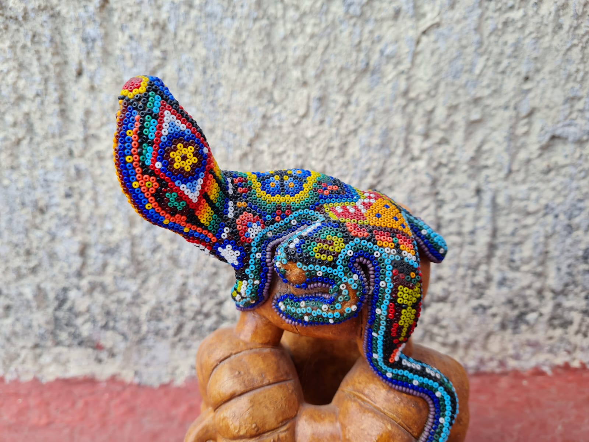
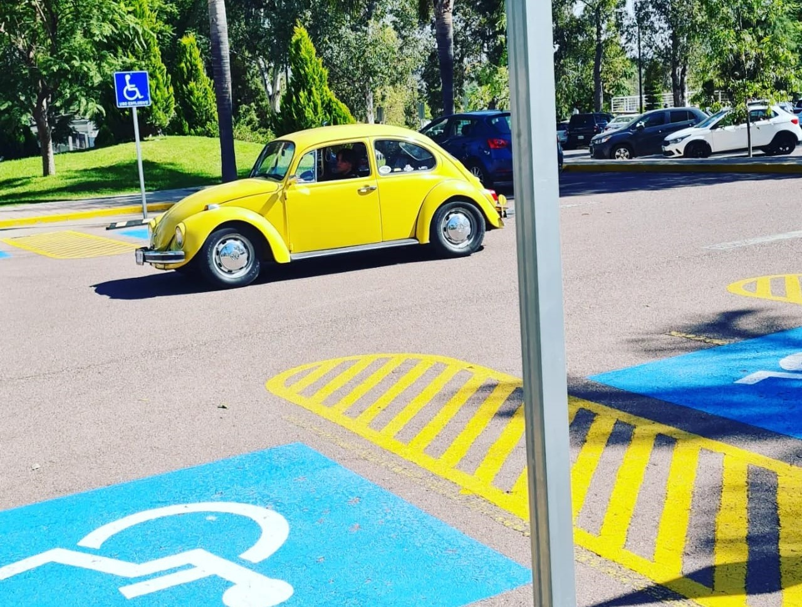
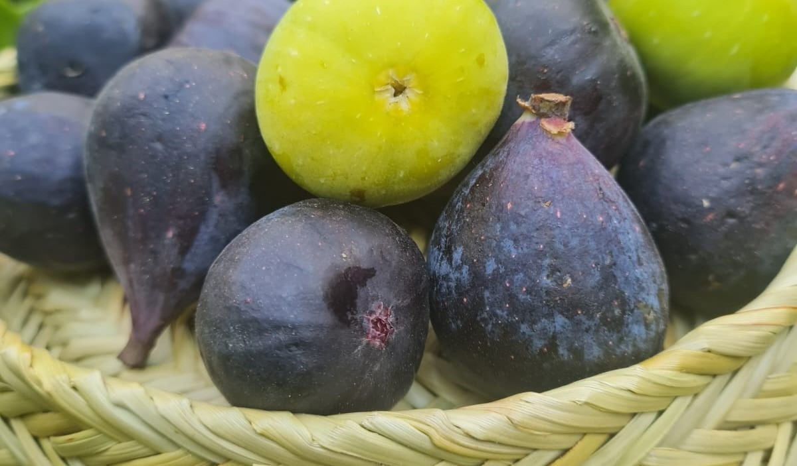
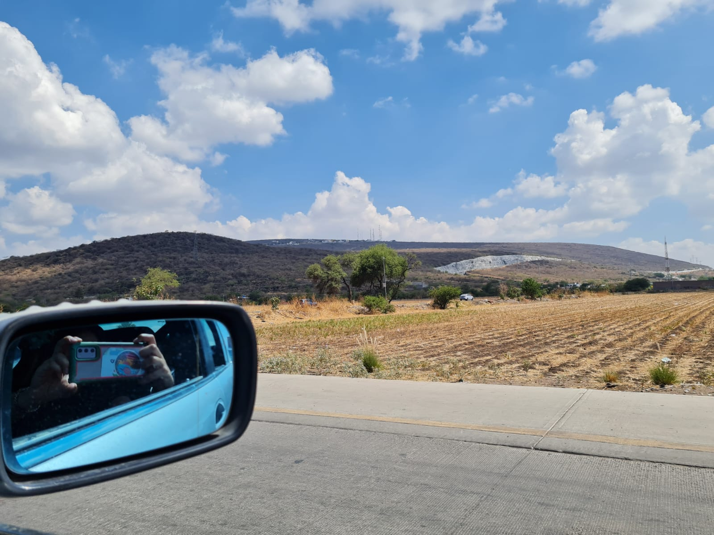

Derechos humanos
¡Conoce tus derechos!
Todos los tenemos.

Derecho de Pueblos y comunidades indígenas
Derecho a su lengua, a la preservación de su cultura y
al acceso a la tenencia de la tierra y al uso y disfrute racional de los recursos naturales.

Derecho de personas con discapacidades
El Estado se encuentra obligado a establecer todas las acciones necesarias para proteger
los derechos humanos de las personas con discapacidad, asegurando su plena inclusión a la sociedad en un marco de respeto.

Derecho a la alimentación
Derecho a la alimentación nutritiva, suficiente y de calidad. El Estado tiene la obligación de garantizar este derecho.
Libertad de expresión
Libertad de buscar, recibir y difundir informaciones e ideas, ya sea oralmente, por escrito, o a través de las nuevas tecnologías
Derecho a la verdad
Toda víctima y sus familiares tienen derecho a conocer la verdad de los hechos que originaron las violaciones a sus derechos humanos.
Igualdad entre mujeres y hombres
Todas las personas gozan los mismos derechos sin importar su sexo o género.
Derecho a la salud
Si las personas hacen uso de los servicios de salud tienen el derecho de obtener prestaciones oportunas, profesionales, idóneas y responsables.

Derecho a la libertad de tránsito y residencia
Es un derecho de las personas para entrar y salir del país, viajar de un lugar a otro dentro del territorio mexicano o mudar
su residencia, sin que se requiera algún permiso o documento legal
Derecho a la educación
Toda persona tiene derecho a recibir educación.
Libertad de trabajo, profesión, industria o comercio
Toda persona tiene derecho a dedicarse a la profesión, industria, comercio o trabajo que le acomode, siendo lícitos.
Derecho a la vivienda
Toda persona tiene derecho a disfrutar de vivienda digna y decorosa. La Ley establecerá los instrumentos y apoyos necesarios a fin de alcanzar tal objetivo.
Derecho a vivir en un ambiente sano
Toda persona tiene derecho a gozar de un medio ambiente sano y ecológicamente equilibrado para su desarrollo y bienestar; corresponde al Estado garantizar este derecho.
Derechos sexuales y reproductivos
Toda persona tiene derecho a que sea respetada su identidad de género y a ejercer su sexualidad con plena libertad, seguridad y responsabilidad.
Libertad religiosa y de culto
Toda persona tiene libertad para adoptar, profesar, divulgar o seguir, inclusive de cambiar, la creencia religiosa o filosófica que más le agrade o desee, y de practicar libremente las ceremonias religiosas del culto de su religión.
Derecho a la reparación integral del daño
Toda persona tiene derecho a que el Estado repare de manera integral, adecuada, diferenciada, transformadora y efectiva el daño o menoscabo que haya sufrido por violaciones a sus derechos humanos.
Amoxtli